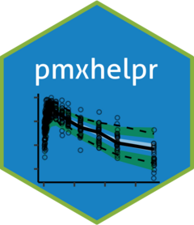

Add count unique values of an identifier within each level of a variable in a data.frame
Source:R/df_addn.R
df_addn.Rddf_addn() returns a data.frame with a factor variable including count of individuals.
Examples
data <- df_addn(data = data_sad, grp_var = "DOSE", id_var = "ID")
#> Joining with `by = join_by(DOSE)`
unique(data$DOSE)
#> [1] 10 (n=6) 50 (n=6) 100 (n=12) 200 (n=6) 400 (n=6)
#> Levels: 10 (n=6) 100 (n=12) 200 (n=6) 400 (n=6) 50 (n=6)
data <- df_addn(data = data_sad, grp_var = "DOSE", id_var = "ID", sep = "mg")
#> Joining with `by = join_by(DOSE)`
unique(data$DOSE)
#> [1] 10 mg (n=6) 50 mg (n=6) 100 mg (n=12) 200 mg (n=6) 400 mg (n=6)
#> Levels: 10 mg (n=6) 100 mg (n=12) 200 mg (n=6) 400 mg (n=6) 50 mg (n=6)